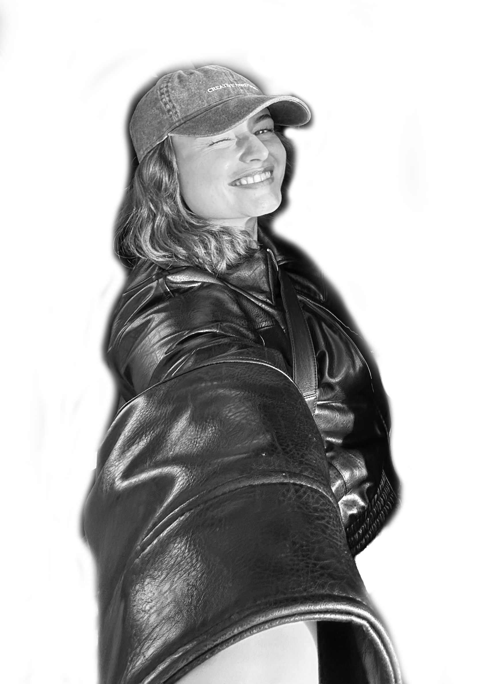
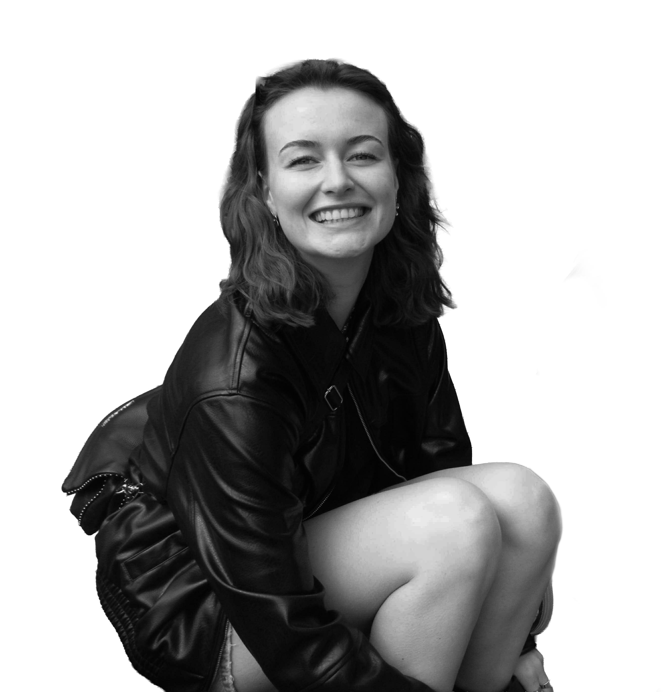
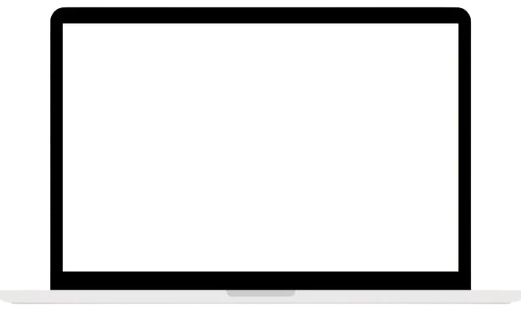
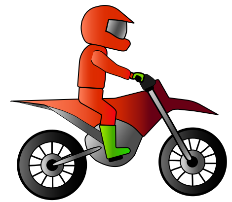
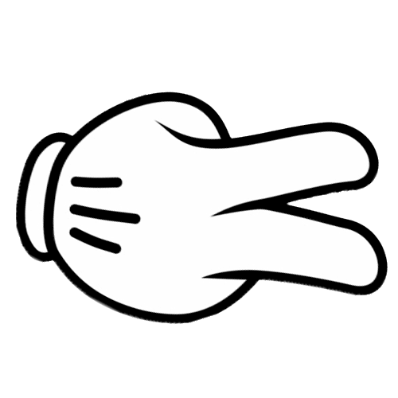

Josefine von Bruhn Krarup
Frontend-developer
Portfolio

Det her er mig
Jeg i fuld gang med 3. semester på multimediedesigneruddannelsen på EK. Samtidig med det, leder jeg efter min praktikplads til mit fjerde og sidste semester.
Jeg er multimediedesigner med en særlig interesse for frontend-udvikling og for at bygge løsninger, hvor design og kode spiller naturligt sammen. Jeg kan godt lide at arbejde i detaljen og se et design blive til et færdigt, fungerende interface i browseren.
På uddannelsen har jeg arbejdet med både UX/UI, visuel kommunikation og webudvikling, men det er især frontend-delen, der har fanget mig. Jeg arbejder med HTML, CSS og JavaScript og er i gang med at lære React, hvor jeg synes det er spændende at bygge komponenter og tænke i struktur og genbrugelighed. Jeg har fokus på responsivt design og på at skabe løsninger, der fungerer lige godt på mobil som på desktop.
Jeg arbejder struktureret og bruger gerne tid på at forstå opgaven og brugeren, før jeg koder. Samtidig sætter jeg pris på feedback og samarbejde og trives godt i teams, hvor man hjælper hinanden og deler viden. Jeg er nysgerrig, lærevillig og motiveret for hele tiden at blive bedre - både teknisk og fagligt.
I en organisation kan jeg bidrage med et stærkt frontend-fokus, forståelse for brugeroplevelse og en positiv, engageret tilgang til arbejdet. Jeg motiveres af at lære nyt, tage ansvar og være med til at bygge løsninger, der er brugervenlige og giver reel værdi for brugerne.
Når jeg ikke studerer, er jeg kreativ og elsker at fordybe mig og bruge mine hænder. Jeg hækler, laver mine egne negle og har generelt stor interesse i at lave DIY projekter derhjemme.
Jeg er for nylig flyttet til København, som jeg nyder fuldt ud, og jeg bruger meget tid med mine veninder, min kæreste og min familie.
Derudover elsker jeg at bruge min fritid på at gå til
dans. Det giver mig både energi og en god balance i hverdagen.
Tag et kig på mit portfolio site her, og bliv klogere på mig.

Cases


Klik her for at se min skoleopgave
View moreBeach Bike er et interaktivt klik-spil udviklet som en individuel opgave på 1. semester. Spillet handler om en motorcyklist, der kører langs stranden og skal nå i mål ved at klikke på de rigtige elementer og opnå nok point inden tiden løber ud. Jeg har selv stået for idé, design og programmering, og alle grafiske elementer er tegnet fra bunden i Illustrator. Projektet gav mig erfaring med interaktion, animationer og struktur i frontend samt samspillet mellem design og kode.
Klik her for at se min skoleopgave
View moreDankort Øremærket er et teamprojekt fra 2. semester udviklet i samarbejde med Dankort. Vi skabte en digital løsning, der belønner bevidst forbrug frem for øget forbrug. Løsningen blev udviklet i Astro med dynamisk indhold og fokus på UX, performance og bæredygtigt webdesign. Projektet gav mig erfaring med frontend-udvikling i teams, arbejde med designsystemer i Figma og omsætning af komplekse problemstillinger til brugervenlige digitale løsninger.

Klik her for at se min skoleopgave
View moreRock, Paper, Scissors er et interaktivt spil, hvor brugeren kan spille mod computeren. Spillet blev udviklet som individuel opgave på 3. semester med fokus på frontend, brugerinteraktion og visualisering. Jeg har selv stået for idé, design og programmering, herunder at bygge alle funktioner, animationer og interface-elementer, så spillet føles dynamisk og responsivt. Projektet gav mig erfaring med at planlægge komplekse brugerinteraktioner, strukturere funktioner i kode og omsætte design til fungerende web-løsninger.
Kernekompetencer
Design, UX og brugerforståelse
- Visuel kommunikation, UX/UI, Figma, wireframes, prototyper og brugercentreret design.
Web & frontendudvikling
- HTML, CSS, JavaScript, Astro, React, Visual Studio Code, GitHub, samt responsivt og mobile-first webdesign.
Let's connect
Kontakt
- Mobil:
- +45 53 54 20 02
- E-mail:
- jose.krarup@hotmail.com